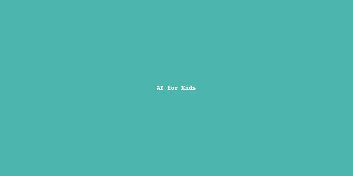

🧠 أهمية تعليم الذكاء الاصطناعي للنشء
تعليم الأطفال مفاهيم الذكاء الاصطناعي يساعدهم على فهم التكنولوجيا المحيطة بهم، ويؤهلهم لصناعة حلول ذكية مستقبلًا.
🖋 مقدمة عن BBC Micro:bit

الميكروبيت هو لوحة إلكترونية صغيرة تساعد الأطفال على تعلم البرمجة والتفاعل مع البيئة عبر الحساسات والمخرجات.
🖋 مقدمة عن Arduino

الأردوينو منصة مفتوحة المصدر تتيح بناء مشاريع إلكترونية وتطبيقات ذكية باستخدام الحساسات والمحركات.